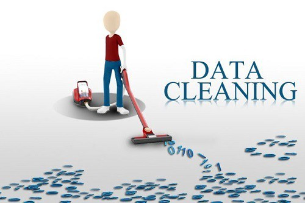

In this project I cleaned and standardized the World Layoffs dataset in SQL Server
by removing duplicates, correcting inconsistent values, handling missing data, and converting
columns to appropriate data types.
In this project I performed exploratory analysis(EDA) on the cleaned World Layoffs dataset using aggregations,
CTEs, window functions, ranking, and date-based analysis to identify layoff trends
across companies, industries, countries, and years.
In this project I cleaned and analyzed a loan payments dataset using Excel formulas,
KPIs, PivotTables, and visualizations to evaluate loan status, principal, delinquency,
and collection performance.
In this project I transformed and cleaned a data professionals survey dataset using Power Query,
created calculated fields and DAX measures, and developed an interactive dashboard to analyze
salaries, job roles, industries, and other professional trends.
In this project I cleaned and standardized a bike sales dataset,
then used PivotTables and charts to analyze customer income, commute distance, age,
gender, and bike purchases.

In this project I cleaned and standardized a US Presidents dataset by removing duplicates,
correcting formatting and text inconsistencies, fixing spacing and data types,
and removing unnecessary columns by using various Excel formulas.
This contains my Tableau Projects.